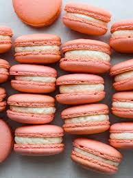

Macarons

Description
This recipe wil yield: 90 Cookies, approximately 1 in. (2.5 cm) each Type: Dry petit
Ingredients
- four almond flour, room temperature 540 g
- Powdered sugar 690 g
- egg whites, room temp (14 whites) 420 g
- Granulated sugar 210 g
- cream of tartar 1 pinch
- dried egg whites (2 tsp.) 9 g
- Liquid or powdered food coloring (optional) as needed
- Buttercream, ganache, jam, lemon curd or other filling as needed
Steps
- in a food processor fitted with the metal blade, mix the almond flour and powdered sugar until the almond flour is very fine. set aside.
- in the bowl of a mixer fitted with the whip attachment, whip the egg whites until foamy. stir to-gether the granulated sugar, cream of tartar and dried egg whites,
then add the mixture to the foamed egg whites in a steady stream.
-
Whip the egg whites on medium speed until the mixture is very stiff. add the food coloring (if using). remove the mixture from the machine.
- Whisk the egg whites using a balloon whisk to restore a uniform smooth appearance to the mix-ture.
using a spatula, fold in one-quarter of the almond and powdered sugar mixture.
add the remaining dry ingredients and fold the batter until it becomes shiny and falls from the spatula in thick ribbons.
if the mixture looks dull, continue to fold until the batter develops a shine.
- using a pastry bag fitted with a medium plain tip, pipe the batter onto silicone baking mats or paper-lined sheet pans.
each macaron should measure 1 inch (2.5 centimeters) wide and ¼ inch (6 millimeters) tall.
if the mark left by the piping tip does not dissolve within 1 minute, stir the batter a little more, then continue piping.
- Let the piped batter rest for 15 minutes.
- Bake at 325°F (160°C) until the macarons can almost be removed from the silicone or parchment paper, approximately 18 to 22 minutes.
- allow the cookies to cool, then remove them from the silicone mats or sheet pans.
- spread a thin layer of buttercream, ganache, jam, or lemon curd on the bottom (pan side) of one cookie and gently press another cookie onto the filling, top side out.
Approximate values per cookie: Calories 30, Total fat 1 g, saturated fat 0 g, Cholesterol 0 mg, sodium 0 mg, Total carbohydrates 4 g, protein 1 g, Claims—gluten free